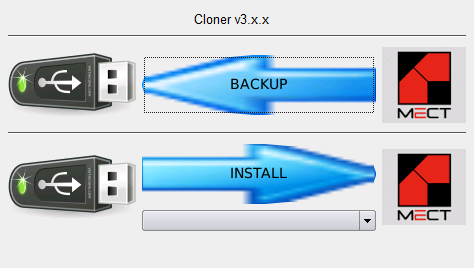
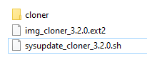
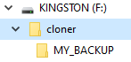

El “Cloner” se utiliza para hacer una copia de backup (seguridad) de una aplicación y eventualmente utilizarla para actualizar otros dispositivos (del mismo modelo).

Procedimiento de BACKUP:
Copie los archivos img_cloner_3.x.x.ext2 y sysupdate_cloner_3.x.x.sh en la carpeta principal de una unidad USB (formato FAT32 de una sola partición - ms-dos MBR).
Atención: NO use el navegador “Edge” porque cambia la extensión del archivo.
Atención: NO debe haber ningún otro archivo de actualización: sysupdate_…
Apaga el dispositivo.
Inserte la unidad USB (si el dispositivo tiene un micro-USB, use un adaptador micro-USB (Tipo A) → USB).
Enciende el dispositivo.
Presiona el botón “BACKUP”.
Escriba el nombre deseado y pulse
El proceso de backup se termina cuando se lee “Operation ‘Local file system’ completed.”
Apaga el dispositivo.
Retire la unidad de USB.
Se creará una carpeta de “cloner” en el unidad USB donde se encontrará una copia de BACKUP.
Procedimiento de INSTALL:
Copiar a la carpeta principal de una unidad USB (formato FAT32 de una sola partición - ms-dos MBR):
los archivos img_cloner_3.x.x.ext2 y sysupdate_cloner_3.x.x.sh.
Atención: NO use el navegador “Edge” porque cambia la extensión del archivo.
la carpeta “cloner”.
Atención: Dentro de la carpeta “cloner” debe haber una carpeta con el nombre de la “backup” que se hizo en el procedimiento BACKUP. Dentro de esta carpeta debe estar el archivo “localfs.tar”.
 
Comprueba que no hay otros archivos de actualización: sysupdate_…
Apaga el dispositivo.
Inserte la unidad USB (si el dispositivo tiene un micro-USB, use un adaptador micro-USB (Tipo A) → USB).
Enciende el dispositivo.
Selecciona la versión que quiere instalar en el menú desplegable.
Presiona el botón “INSTALL”.
El proceso de INSTALL se termina cuando se lee “Operation ‘Local file system’ completed.”
Apaga el dispositivo.
Retire la unidad USB.